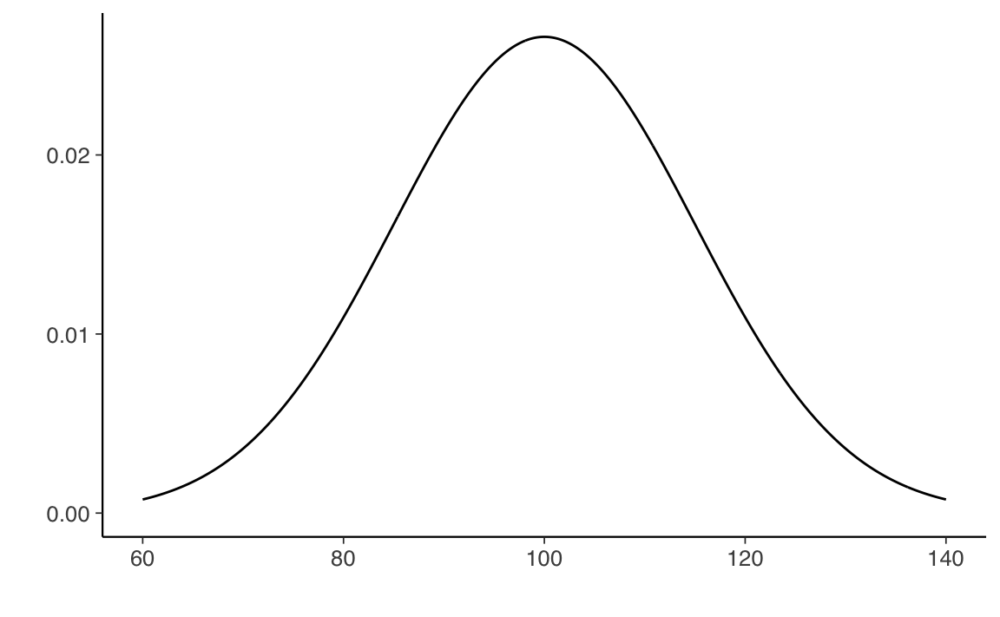
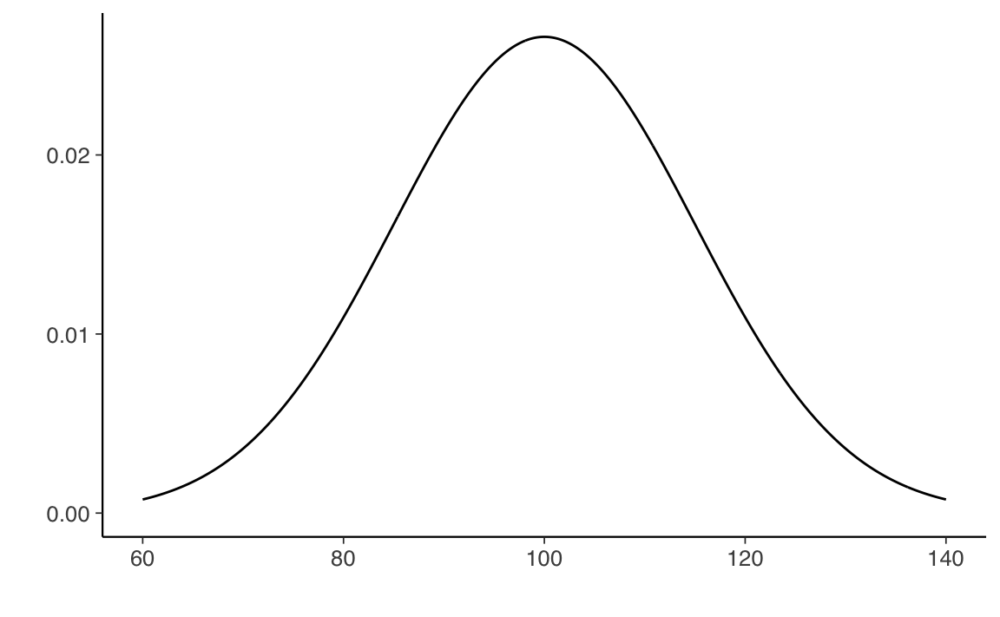
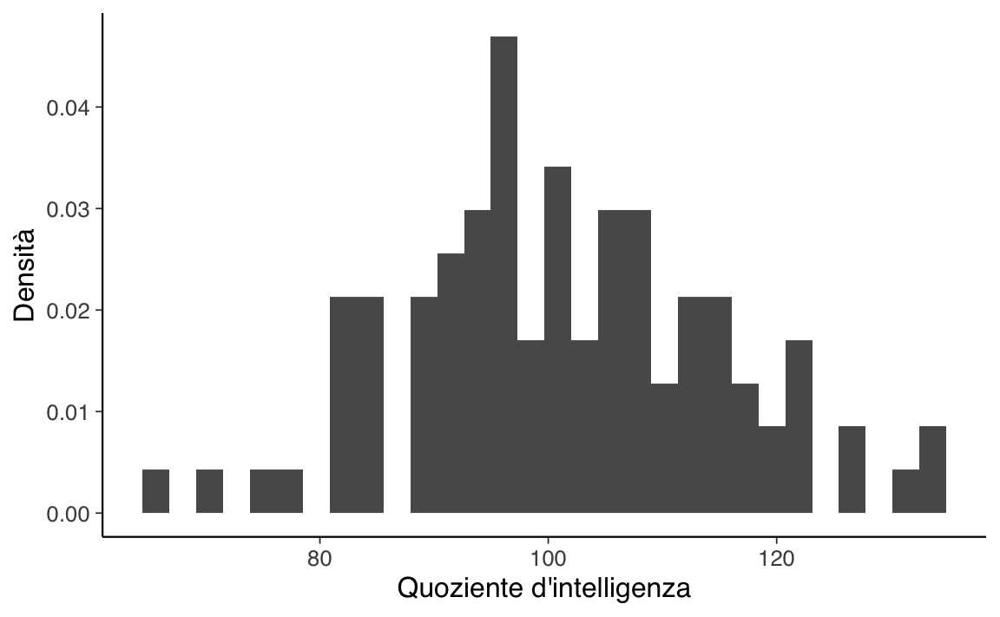

library("ggfortify")
ggdistribution(dnorm, seq(60, 140, 0.1), mean = 100, sd = 15) +
labs(
x = "Quoziente d'intelligenza",
y = "Densità di probabilità"
)
In statistica, per popolazione si intende un insieme di elementi che presenta caratteristiche aleatorie, mentre per campione si intende un sottoinsieme della popolazione. Ma a cosa corrisponde in pratica la popolazione? Per uno psicologo la popolazione è un gruppo di individui. Per un biologo marino la popolazione è un gruppo di delfini, ad esempio. Nella maggior parte dei casi, le popolazioni oggetto di interesse per i ricercatori sono insiemi di entità concrete che esistono nel mondo reale. Dal punto di vista della statistica, invece, le popolazioni sono delle entità astratte. Infatti, gli statistici operazionalizzano il concetto di “popolazione” nei termini di un oggetto matematico che consente di essere manipolato con facilità. In precedenza noi abbiamo già incontrato questi oggetti matematici: sono le distribuzioni di probabilità.
L’idea è semplice. Supponiamo di occuparci del quoziente di intelligenza, QI. Abbiamo detto che, per uno psicologo, la popolazione di interesse solitamente è un gruppo di individui, ciascuno dei quali è dotato di uno specifico punteggio del QI. Uno statistico “semplifica” tale situazione definendo in maniera operativa la popolazione come la distribuzione di densità rappresentata nella figura @ref(fig:qidensity). In precedenza abbiamo visto infatti come una distribuzione di densità non sia altro che la descrizione matematica della “forma” di un istogramma che rappresenta un numero molto alto di osservazioni.
library("ggfortify")
ggdistribution(dnorm, seq(60, 140, 0.1), mean = 100, sd = 15) +
labs(
x = "Quoziente d'intelligenza",
y = "Densità di probabilità"
)
I test di intelligenza sono progettati in modo che il QI medio sia pari a 100, la deviazione standard dei punteggi QI sia uguale a 15 e la distribuzione dei punteggi del QI sia normale. I valori riportati sopra sono detti parametri in quanto descrivono le proprietà dell’intera popolazione. Cioè, diciamo che la media della popolazione è \(\mu = 100\) e la deviazione standard della popolazione è \(\sigma = 15\). Dal punto di vista statistico, dunque, possiamo rappresentare questa ipotetica popolazione di valori del QI mediante l’oggetto matematico che corrisponde a una particolare distribuzione Normale:
\[ QI \sim \mathcal{N}(\mu = 100, \sigma = 15). \] Supponiamo ora di eseguire un esperimento nel quale il test di intelligenza viene somministrato a 100 persone selezionate a caso. Tale campione casuale semplice consiste nel seguente insieme di 100 numeri:
set.seed(123)
iq1 <- rnorm(100, 100, 15)
# i valori QI sono numeri interi!
iq1 <- round(iq1)
iq1
#> [1] 92 97 123 101 102 126 107 81 90 93 118 105 106 102 92 127 107 71
#> [19] 111 93 84 97 85 89 91 75 113 102 83 119 106 96 113 113 112 110
#> [37] 108 99 95 94 90 97 81 133 118 83 94 93 112 99 104 100 99 121
#> [55] 97 123 77 109 102 103 106 92 95 85 84 105 107 101 114 131 93 65
#> [73] 115 89 90 115 96 82 103 98 100 106 94 110 97 105 116 107 95 117
#> [91] 115 108 104 91 120 91 133 123 96 85Tali valori sono stati trovati utilizzando la funzione rnorm() che genera numeri casuali estratti da una distribuzione normale. Nello specifico, abbiamo estratto 100 valori casuali dalla distribuzione normale con media 100 e deviazione standard 15. Se costruiamo un istogramma con i dati di un tale campione otteniamo il grafico mostrato nella figura @ref(fig:histogramqi).
data.frame(iq1) %>%
ggplot(aes(x = iq1)) +
geom_histogram(aes(y = ..density..)) +
labs(
x = "Quoziente d'intelligenza",
y = "Densità"
)
Come possiamo vedere, l’istogramma ha approssimativamente la forma corretta, ma è un’approssimazione molto cruda della distribuzione della popolazione mostrata nella figura @ref(fig:qidensity). Se calcoliamo la media del campione, otteniamo un numero abbastanza vicino alla media della popolazione di 100, ma non identico: nel campione considerato la media e la deviazione standard sono uguali a:
Queste statistiche campionarie descrivono le proprietà di uno specifico campione che è stato osservato e, sebbene siano abbastanza simili ai parametri della popolazione, non sono uguali ad essi. In generale, le statistiche campionarie sono ciò che è possibile calcolare a partire dai dati osservati sul campione mentre i parametri della popolazione sono ciò che vorremmo conoscere.
Nella sezione Parametri e statistiche abbiamo considerato i risultati di un esperimento casuale nel quale sono stati osservati i valori fittizi del QI di un campione di ampiezza \(n = 100\). I risultati sono incoraggianti: la media campionaria di 101.42 ci fornisce un’approssimazione ragionevole della media della popolazione \(\mu = 100\). In molti studi un tale livello di precisione è accettabile, ma in altre situazioni è necessario essere più precisi.
Cosa dobbiamo fare se vogliamo che le statistiche campionarie siano più vicine ai parametri della popolazione? La risposta è ovvia: dobbiamo raccogliere più dati. Supponiamo dunque di condurre un nuovo esperimento nel quale misuriamo il QI di 10000 persone. Possiamo simulare i risultati di questo esperimento usando R:
Nella figura @ref(fig:histogramqi2) è riportato l’istogramma dei valori del QI di questo campione più numeroso. È chiaro che, in questo secondo caso, otteniamo un’approssimazione migliore rispetto al precedente campione più piccolo. Ciò si riflette anche nelle statistiche del campione:
Questi valori sono molto vicini ai parametri della popolazione.
data.frame(iq2) %>%
ggplot(aes(x = iq2)) +
geom_histogram(aes(y = ..density..)) +
labs(
x = "Quoziente d'intelligenza",
y = "Densità"
)Il messaggio, un po’ banale, che ricaviamo a questa simulazione è che, generalmente, i campioni di dimensioni maggiori forniscono informazioni migliori. Ho chiamato “banali” i risultati di questa simulazione perché dovrebbe essere evidente a tutti che le cose stanno così. Infatti, questo punto è talmente ovvio che, quando Jacob Bernoulli – uno dei fondatori della teoria della probabilità – formalizzò questa idea nel 1713, commentò il risultato nel modo seguente:
Perché anche il più stupido degli uomini, basandosi soltanto sul suo istinto, da solo e senza alcuna istruzione (il che è notevole), è convinto che maggiore è il numero di osservazioni, minore è il pericolo di sbagliare.
In statistica questa intuizione va sotto il nome di Legge dei grandi numeri. La Legge dei grandi numeri ci dice che la media aritmetica di un campione di \(n\) osservazioni.
In termini tecnici: di \(n\) variabili aleatorie \(X_i\) indipendenti e identicamente distribuite), ovvero \(\frac{1}{n}\sum_{i=1}^nX_i\), per \(n\) crescente tende o converge al valore atteso teorico \(\mu\).
La Legge dei grandi numeri è uno degli strumenti più importanti della statistica.
Si noti che la Legge dei grandi numeri non può dirci se lo strumento o l’esperimento considerati stiano producendo dei dati utili o dei dati che è sensato riassumere tramite la media. Ad esempio, se il dispositivo di misurazione è difettoso, la media di molte misurazioni sarà una stima molto accurata della cosa sbagliata! Questo è un esempio di errore sistematico, o errore di campionamento, che sono qualcosa di molto diverso dal fenomeno di fluttuazione casuale che viene descritto dalla Legge dei grandi numeri.